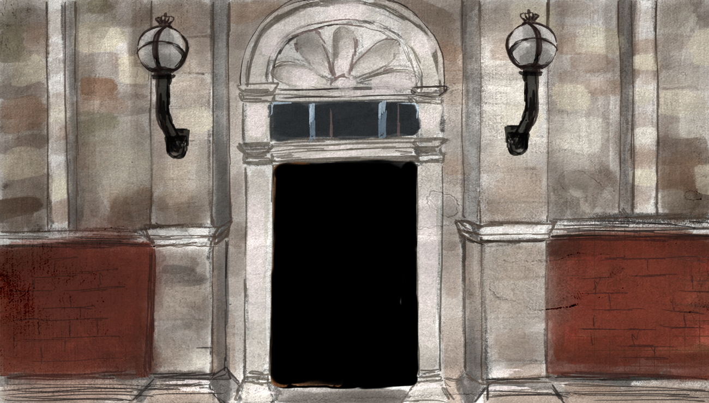

<div>

    
    <!--TODO - This scene needs as background the outdoors scene at night-->

    <!--TODO replace this with the clickable door-->
    <!-- <p ng-click="outside_door_click()">Door</p> -->

    
    
    
    
    <!--subtitles-->
    <p>{{narration.outside_door}}</p>


</div>
